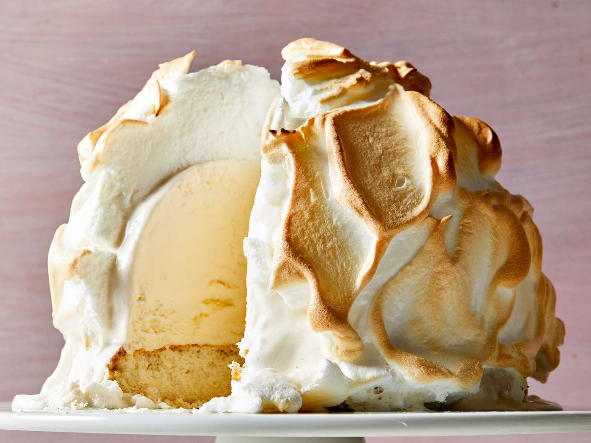

Baked Alaska

Description
Baked Alaska is a cake topped with ice cream and caramelized meringue. It's so delicious and a great way to wow your guests! You can use your favorite flavor of ice cream or a combination of flavors.?
Ingredients
- 2 quarts vanilla ice cream, softened, or as needed
- 8 egg whites
- 1/8 teaspoon cream of tartar
- 1/8 teaspoon of salt
- 1 cup white sugar
- 1 8-inch round prepared white cake layer
Steps
- Line the bottom and sides of an 8-inch round mixing bowl with plastic wrap. Pack softened ice cream into the prepared bowl, then flatten the top and cover with more plastic wrap. Freeze until firm, 8 hours to overnight.
- Beat egg whites, sugar, cream of tartar, and salt in a mixing bowl until stiff peaks form.
- Line a baking sheet with parchment paper and place cake in the center. Remove ice cream from the freezer, discard plastic wrap, and turn ice cream out on top of cake.
- Quickly spread meringue over ice cream and cake, swirling in decorative patterns if desired. Freeze for 2 hours..
- Preheat the oven to 425 degrees F (220 degrees C).
- Bake cake on the lowest oven shelf until meringue is light brown, 8 to 10 minutes.
- Slice and Enjoy